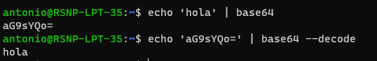

# 20230321: Base64 en Línea de Comandos Bash
- La línea de comando bash (opens new window) es la que se usa por default en Ubuntu (opens new window) y otras versiones de Linux.
- También está disponible en Windows si se ha instalado Git Bash (opens new window) o https://learn.microsoft.com/es-es/windows/wsl/install.
- El comando
base64permite codificar una cadena de texto a base64.
echo 'hola' | base64
# aG9sYQo=
- Y, de modo inverso, el modificador --decode permite decodificar base64 a texto normal
echo 'aG9sYQo=' | base64 --decode
# hola
